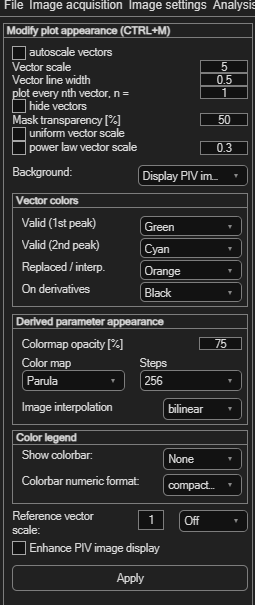
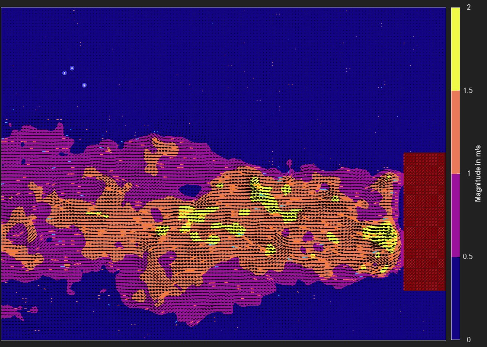

Modifying plot appearance
Everything here is purely about display — it changes how your results look on screen (and in exports), not the underlying data.
Open via Plot → Modify plot appearance (Ctrl+M).

Vector appearance
| Control | Effect |
|---|---|
| autoscale vectors | Automatically scales vector length for readability. |
| Vector scale | Manual scale factor (default 5), used when autoscale is off. |
| Vector line width | Thickness of the drawn vectors (default 0.5). |
| plot every nth vector, n = | Shows only every nth vector — useful when the field is too dense to read (a wavelet-optical-flow analysis, for example, produces one vector per pixel). |
| hide vectors | Hides vectors entirely — useful when you only want to show a derived-parameter overlay. |
| uniform vector scale | Draws every vector at the same length, regardless of velocity — direction only. |
| power law vector scale | Scales vector length with a sublinear power function instead of linearly — long vectors are compressed more as the exponent (default 0.3) gets smaller, so a few very fast vectors don't visually dominate the plot. |
Background image
The Background dropdown chooses what's shown behind the vectors: Display PIV image, Solid black, or Solid white. Enhance PIV image display (on by default) improves the raw image's contrast purely for display.
Vector colors
Four colors, each chosen from a preset list:
| Role | Default |
|---|---|
| Valid (1st peak) | The primary color for good vectors. |
| Valid (2nd peak) | Vectors taken from the correlation's second peak. |
| Replaced / interp. | Vectors that were rejected and filled by interpolation. |
| On derivatives | Vector color when a derived parameter (e.g. vorticity) is shown underneath. |
Also here: Mask transparency [%] (default 50) — controls how see-through the red overlay is when viewing masks.
Derived-parameter colormap
| Control | Effect |
|---|---|
| Colormap opacity [%] | Transparency of the derived-parameter overlay (default 75). |
| Color map | Parula, HSV, Jet, HSB, Hot, Cool, Spring, Summer, Autumn, Winter, Gray, Bone, Copper, Pink, Lines, or Plasma. |
| Steps | Number of discrete colors in the map (256 down to 2). |
| Image interpolation | bilinear (default), bicubic, or nearest — how the colormap image is resampled for display. |

Color legend
| Control | Effect |
|---|---|
| Show colorbar | None, or a position: South/North/East/West Outside. |
| Colorbar numeric format | Compact notation, scientific notation, or fixed-decimals. |
Reference vector
A reference vector is a fixed-length arrow drawn in a corner of the plot so viewers can judge scale at a glance. Set its Reference vector scale (in the same units as your vectors) and its position — Off, or one of the four corners.
Applying
Click Apply to refresh the display with your changes.